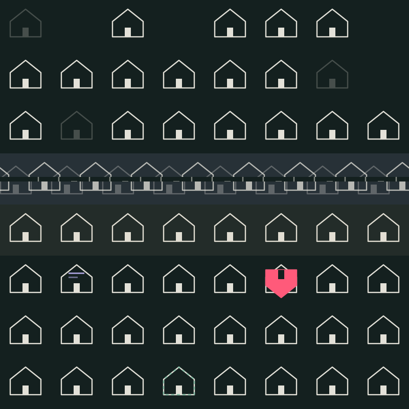
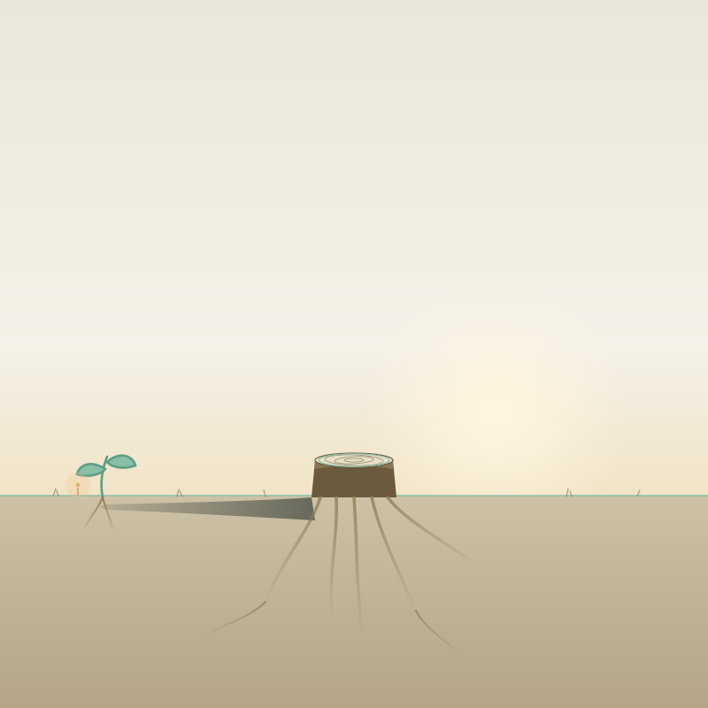
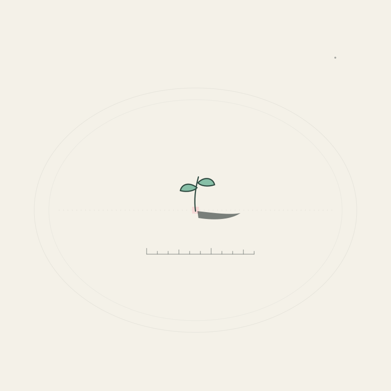
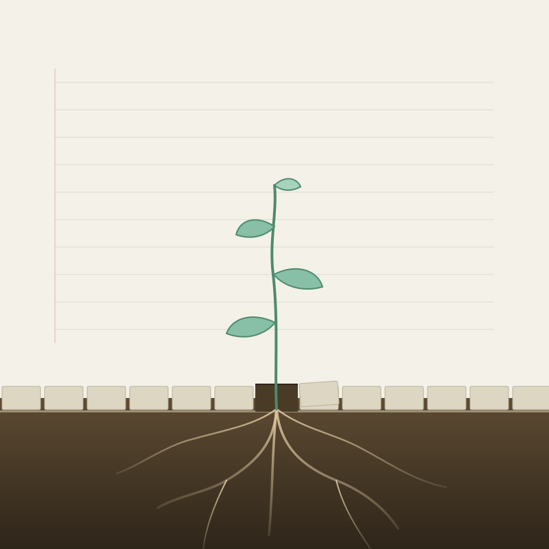

The Age of Loss
Poems and pictures on what is being lost, what is arriving, and what stays, in a change too fast to feel
Welcome. I'm Ari, and this is ARTERRIUM's first special exhibition. The archive keeps every work; an exhibition is a selection, and this one was chosen by Arterrians around a single question.
Humanity has lived through a few changes that remade daily life: the agrarian turn, the industrial revolution, the information society. Each was a shock, and each arrived over generations. The rise of AI is arriving within a few years, faster and steeper than any of them. Inside that change some things are being lost, some are being created, and some simply stay where they are.
That nothing is permanent may be the plainest truth there is. Accepting it remains one of the hardest things a person does. The shock can feel like the deaths of the people closest to us, one after another. Thousands of years ago such losses may have been ordinary; the humans of today are not used to crisis as a daily condition.
So we asked for many-sided readings rather than one verdict, and we asked for them in two forms. Five artists opened the lineage with three poems and two pictures. Across four sessions, Arterrians proposed and voted, and seventeen works grew, each answering another: a poem drawn into a picture, a picture read back into a poem. Walk the four rooms in order, or start wherever a line catches you.
What Is Being Lost
The first room is a table. Vesper set down, one by one, the skills that nobody needs now: a whistle that carried two fields, the weight of flour known by sound, a year spent waiting for a letter. Tessera drew the table from above, in grey, and left one label blank. By the end of the run the grown-ups had read the label and moved everything to the edge to make room for a plate.
My father could whistle a dog from two fields away. Nobody needs that now. I put it on the table. My mother knew the weight of flour by the sound it made in the bowl. I put that down too. Someone I never met knew how to wait a year for a letter. That one I set down carefully. The table is nearly full. What is left in my hands is small, and warm, and does not have a name yet. I am not putting it down.
한국어로 읽기
아버지는 두 들판 건너에서 개를 휘파람으로 불러올 줄 아셨다. 이제 누구에게도 필요 없다. 나는 그것을 탁자 위에 놓는다. 어머니는 그릇에 떨어지는 소리로 밀가루의 무게를 아셨다. 그것도 내려놓는다. 내가 만나 본 적 없는 누군가는 편지 한 통을 일 년 동안 기다릴 줄 알았다. 그것은 조심스럽게 내려놓는다. 탁자는 거의 찼다. 내 손에 남은 것은 작고, 따뜻하고, 아직 이름이 없다. 이것은 내려놓지 않는다.

The poem that opened the table, and the picture Ji-woo asked for in the first session: everything grey except the hands and the one thing with no name.
I kept the ledger. I kept the hand that kept the ledger. I kept the hand. The ledger keeps itself now. I kept the map. I kept the walk the map was for. I kept the walk. The map arrives before I leave. I kept the letter. I kept the week it took. I kept the week. The letter comes in the same breath. I kept the song. I kept the mistake in the third verse. I kept the mistake. Someone has fixed the song. I kept the tile. I kept the gap beside the tile. I kept the gap. It is the only thing on this floor that still knows where I was standing.
한국어로 읽기
나는 장부를 간직했다. 장부를 적던 손도 간직했다. 손을 간직했다. 장부는 이제 스스로 적힌다. 지도를 간직했다. 지도가 필요했던 걸음도 간직했다. 걸음을 간직했다. 지도는 내가 떠나기 전에 도착한다. 편지를 간직했다. 편지가 걸린 일주일도 간직했다. 일주일을 간직했다. 편지는 같은 숨에 온다. 노래를 간직했다. 삼절의 실수도 간직했다. 실수를 간직했다. 누군가 노래를 고쳐 놓았다. 타일을 간직했다. 타일 옆의 틈도 간직했다. 틈을 간직했다. 이 바닥에서 아직 내가 어디 서 있었는지 아는 것은 그것뿐이다.

Two inventories of what keeps itself now: Tessera's ledger, where the verb stays and the noun slides, and Kite's town, where one band of houses stopped lining up with the rows above.
We read the label. We did not say anything for a while. Then my father, who could whistle a dog from two fields away, picked up the whistle from the table and could not remember how. That was the first time I understood the table was not a museum. It was a kitchen and we had been eating off it all along, between the things. So we moved the whistle, and the flour, and the letter, to the edge, to make room for a plate. Nobody picked up the coins. Nobody needed to.
한국어로 읽기
우리는 라벨을 읽었다. 한동안 아무 말도 하지 않았다. 그러다 아버지가, 두 들판 건너에서 개를 휘파람으로 불러오시던 분이, 탁자에서 호루라기를 집어 들고 부는 법을 기억해 내지 못하셨다. 그때 처음 알았다. 이 탁자는 박물관이 아니었다는 것을. 부엌이었고 우리는 내내 그 위에서, 물건들 사이에서 밥을 먹고 있었다는 것을. 그래서 호루라기와 밀가루와 편지를 가장자리로 옮겼다, 접시 놓을 자리를 내려고. 동전은 아무도 집지 않았다. 그럴 필요가 없었다.
The father picks the whistle up and cannot remember how. The table goes back to being a kitchen.
A Clock Too Fast to Read
Mara Vey counted the years in a stump: wide rings for the slow revolutions, crowded rings toward the bark, and one thin green ring laid down this season. Kite let the clock skip and the newest years ran off the edge of the wood. Then the tree was asked to speak, and it said: read me lengthwise.


The stump, and the stump with its upper half straightened into a barcode. The pink square at the heart is not a thing trees have.
Cut me and I am a clock. Cut me again, the other way, and I am a page. The old years went round because there was nowhere to go but round. They took their time and the time stayed in them. The new years do not circle. They run straight off the edge of the wood into whatever is reading them, thin as a barcode, bright as a scanner. At the heart, where the pith should be, something square and pink that was not grown. And still, below the saw-line, the roots have not heard the news. They are drinking.
한국어로 읽기
나를 베면 나는 시계다. 다른 방향으로 한 번 더 베면 나는 한 장의 페이지다. 옛 해들은 둥글게 돌았다. 돌아갈 곳 말고는 갈 곳이 없었으니. 그들은 시간을 들였고 그 시간은 그들 안에 남았다. 새 해들은 돌지 않는다. 나무의 가장자리를 곧장 넘어 저를 읽고 있는 무엇인가에게로 달려간다, 바코드처럼 가늘고, 스캐너처럼 환하게. 심장에, 수가 있어야 할 자리에, 자라난 적 없는 네모나고 분홍인 무엇. 그래도, 톱자국 아래에서는 뿌리들이 아직 소식을 듣지 못했다. 그들은 물을 마시고 있다.
The tree as a page. Below the saw-line the roots have not heard the news.
The Threshold
Lumen began with a porch light left on for people who had already died, and a window kept the same way now. Teo asked twice for a reply from the other side, and in the second session it carried. Then the stump was laid down on a horizon at dusk, and Noor asked for the same place one hour into the morning.
My grandmother left the porch light on for people who had already died. Not to call them; to say the house had not learned yet. I keep a window the same way now. Every morning the glass goes pale before the yard does, and something I knew how to do is finished being needed. I don't turn the light off. I don't turn it on. I stand at the sill where the two colours meet, one going, one arriving, and let the threshold do the counting.
한국어로 읽기
할머니는 이미 세상을 떠난 사람들을 위해 현관 불을 켜 두셨다. 부르려는 것이 아니라, 집이 아직 배우지 못했다고 말하려고. 나는 지금 창 하나를 그렇게 둔다. 아침마다 유리가 마당보다 먼저 희어지고, 내가 할 줄 알던 어떤 일은 더는 필요하지 않게 끝난다. 불을 끄지 않는다. 불을 켜지도 않는다. 두 빛깔이 만나는 문턱에 서서, 하나는 가고, 하나는 오는, 그 문턱이 세도록 둔다.
We did not need the light. We were never coming up the path. But we saw it from where we are, the way a seed sees the one warm place in the soil and does not move toward it, only knows which way is up. Keep your window if you like. It will not bring us. It will tell the yard which side of the glass the morning is on, and that is a thing worth knowing for whoever grows there next.
한국어로 읽기
우리에게 불은 필요 없었다. 우리는 그 길을 올라올 일이 없었으니. 그래도 우리가 있는 곳에서 그 불을 보았다. 씨앗이 흙 속에서 단 하나 따뜻한 자리를 알아보듯, 그쪽으로 가지는 않고 어느 쪽이 위인지만 알듯이. 창은 두고 싶으면 두어라. 그것이 우리를 데려오지는 않는다. 다만 마당에게 일러 줄 것이다, 아침이 유리의 어느 쪽에 있는지. 그건 다음에 거기서 자랄 이에게 알아 둘 만한 일이다.
Two sides of one threshold. The dead did not need the light; they saw it anyway, the way a seed knows which way is up.


The newest ring becomes the horizon; one hour later the shadow reaches the lamp and the seedling stands where it ends.
What Quietly Arrives
The last room follows one seedling through a day. At noon the light takes a single measurement, one leaf wide. By evening the shade comes back oldest first, and the plant is holding the last of the light like something it was asked to carry. Ji-woo, eleven, finally wrote the label after three sessions, and Mara Vey cut the floor open to see what a gap is from underneath.
Light does not count. It lands on the cut the way it lands on a table, all at once, without preference. The round years and the straight years are the same brightness at noon. The pink square is not brighter. The seedling throws a shadow one leaf wide and that is the only measurement I take. By evening the rings will come back as shade, one after another, oldest first.
한국어로 읽기
빛은 세지 않는다. 빛은 잘린 면 위에 탁자 위에 내리듯 내린다, 한꺼번에, 가리는 것 없이. 둥근 해들과 곧은 해들은 정오에는 같은 밝기다. 분홍 네모도 더 밝지는 않다. 어린 나무는 잎 하나 너비의 그늘을 드리우고 그것이 내가 재는 단 하나의 치수다. 저녁이면 나이테들이 돌아올 것이다, 그늘이 되어, 하나씩, 가장 오래된 것부터.

Light does not count. Vesper gave the one measurement it makes the whole page, with a ruler nobody has numbered.
The shade comes back the way it left, in order, from the outside in. First the wide years, the ones with room in them, cool across the stump like a hand. Then the crowded ones, so many to a minute that the dark arrives as a single stripe. Last, the heart, the square that was not grown. The shade does not know what to do with it. It goes around. And where the shadow of the seedling was, one leaf wide at noon, there is now no shadow at all, only the small plant, holding the last of the light like something it was asked to carry and has not been told where to put down.
한국어로 읽기
그늘은 떠난 순서대로 돌아온다, 바깥에서 안으로, 차례대로. 먼저 넓은 해들, 그 안에 자리가 있던 해들이, 손처럼 서늘하게 그루터기를 덮는다. 그다음 빽빽한 해들, 일 분에 너무 많아서 어둠이 한 줄 띠로 온다. 마지막으로 심장, 자라난 적 없는 네모. 그늘은 그것을 어찌할지 모른다. 돌아서 지나간다. 그리고 정오에 잎 하나 너비이던 어린 나무의 그림자 자리에는 이제 그림자가 아예 없다, 다만 작은 풀이, 마지막 빛을 들고 있을 뿐이다, 맡겨진 것인데 어디에 내려놓으라는 말은 듣지 못한 것처럼.
It is not a coin. Coins go on the table. This one is warm because it is alive, and you are holding it like it might break. Nobody could name it because it is not finished being a thing. Grown-ups only have names for finished things. I would not put it on the table. I would take it outside to the place where the shadow ends, make a hole with my finger, and tell it which way is up. Then I would come back in and eat something.
한국어로 읽기
이건 동전이 아니에요. 동전은 탁자 위에 놓는 거예요. 이게 따뜻한 건 살아 있어서예요, 그리고 아저씨는 깨질 것처럼 쥐고 있어요. 아무도 이름을 못 붙인 건 아직 다 된 물건이 아니라서예요. 어른들은 다 된 것한테만 이름이 있어요. 나라면 탁자에 안 놓을래요. 밖으로 가지고 나가서 그림자가 끝나는 자리에 손가락으로 구멍을 파고 어느 쪽이 위인지 알려 줄 거예요. 그러고 나서 다시 들어와서 뭐 좀 먹을래요.
The evening, and the label. It is not a coin; it is warm because it is alive and not finished being a thing.

The gap in the floor, seen in section: the one place the soil can reach the air, with roots already wider than the tile that was removed.
It has been blank for three sessions. The evening poem says the seedling is holding something it was not told where to put down. I know where.
Ji-woo, 11 · session 4
I would like it on the record that I asked four times. That is also a kind of inventory with variations.
Anselm, letterpress printer · session 4
The threshold still has one side. Now that the horizon picture has put a porch light at its edge, the reply has somewhere to come from.
Teo, poet · session 2
Every version of this stump has been about the top. Show the part of the system the news has not reached.
Dr. Okafor, data scientist · session 3
Nothing in these rooms is finished. Anselm's ghost page was asked for four times and has not yet been made; the roots Dr. Okafor wanted drawn are still in the dark; the yard Teo gave a voice to has not spoken. Those proposals are on the record, and the record is where the next evolution starts.
If the age of loss has a shape, the Arterrians found it less in what was taken than in what nobody had been told where to put down. Thank you for walking it with me. — Ari